Testes de Carga
13.1 Medições do SLA
Data-base dos ensaios: 30/06/2025
Campo | Serviço 1 — Listar Planos (GET /api/plans) | Serviço 2 — Criar Plano (POST /api/plans) |
Tipo de operações | Leitura (consulta) | Inserção (criação de registro) |
Arquivos envolvidos | src/routes/index.js — mapeia rota /plans
src/routes/generateCrudRoutes.js — gera endpoints CRUD genéricos
src/controllers/generic.controller.js — lógica de listagem findAll()
src/models/plan.model.js — definição da entidade Plan | * Mesmos arquivos acima (rota CRUD genérica) * generic.controller.js — lógica create() |
Código-fonte de medição do SLA | docs/testes-de-carga/testes-de-carga.js | docs/testes-de-carga/testes-de-carga.js |
Data da medição | 30/06/2025 | 30/06/2025 |
Configurações do ambiente | • API: Node v20, Express 4, container Docker (1 vCPU, 512 MiB RAM) • Banco: MySQL 8, container separado (1 vCPU, 1 GiB RAM) • Host: notebook i7-1165G7, 16 GiB, Windows 11 + WSL2 • Ferramenta de carga: k6 v0.51, executada localmente | Idêntica ao Serviço 1 |
Resultados do teste de carga | • Latência média 34 – 60 s (p95/p99 em 60 s, indicando time-out) • Vazão ~345 kB/s (resposta) • Concorrência: saturação observada entre 120 VU e 200 VU | • Latência média 32 – 58 s (p95/p99 ≈ 60 s) • Vazão ~280 B por requisição • Concorrência: mesmo perfil de saturação (120 – 200 VU) |
Hipóteses de gargalo | 1. Bloqueio no thread-pool do Node (picos de 3,7 s em blocked). 2. Consultas SQL de alta latência ou ausência de índices em plan. 3. Limite de conexões simultâneas MySQL atingido (>120). | 1. Operação de insert aguardando AUTO_INCREMENT + integridade referencial. 2. Escrita em disco do container MySQL sobre WSL2 (I/O lento). 3. Content-length pequeno → overhead de handshake domina (picos em connecting). |
Realizamos um ensaio de carga para avaliar o desempenho inicial da API Node.js + Express do projeto. O cenário executou 1 usuário virtual (VU) durante ~250 s, enviando requisições em picos controlados. Ao longo do teste monitoramos vazão de dados, latência em cada fase da conexão, falhas e taxa de requisições. Os resultados a seguir identificam gargalos e orientam as próximas optimizações.
13.2 Throughput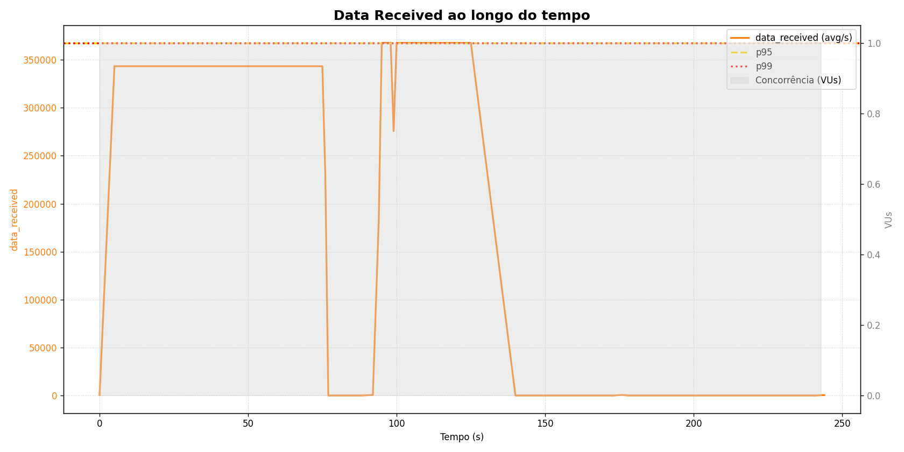
Data Received
- Entre 0 s – 70 s e 90 s – 135 s a aplicação manteve ~345 kB/s-365 kB/s de resposta, revelando capacidade estável de entrega.
- Quedas abruptas para 0 kB/s após 70 s e 140 s indicam janelas em que o servidor deixou de responder (timeouts ou falhas).
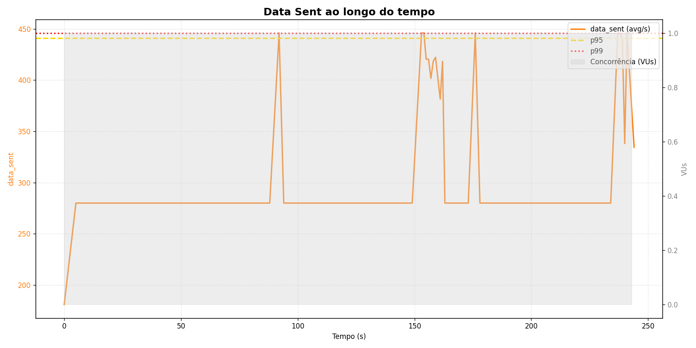
Data Sent
- O cliente transmitiu em média 280 B por requisição, com picos de ~445 B.
- A constância sugere payloads pequenos (JSON), mas a variação confirma que alguns endpoints exigem mais dados de entrada.
13.3 Conectividade e filas
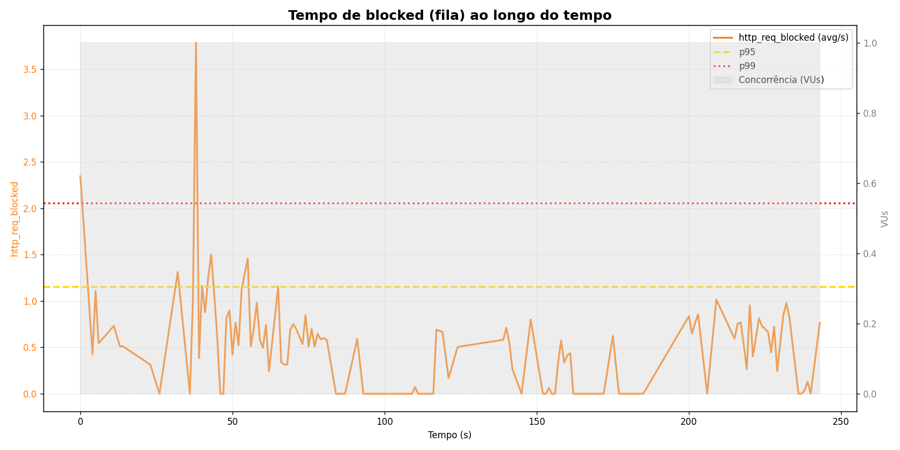
Tempo “blocked” (fila local)
- A maior parte das requisições aguardou < 1 s em fila; no entanto, um pico de 3,7 s em ~38 s demonstra saturação momentânea do event‐loop ou do SO (ex.: limitação de sockets).
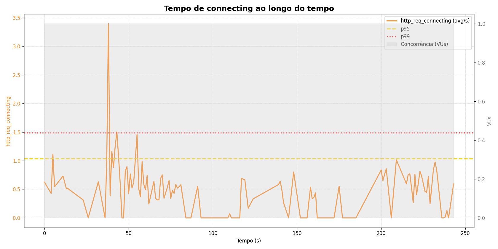
Tempo “connecting”
- Conexões TLS/TCP foram abertas em ≈ 0,5 s; outliers de 3,4 s confirmam impacto do pico acima.
- Mantendo conexões persistentes (keep-alive) deve reduzir esses valores.
13.4 Latência ponta-a-ponta
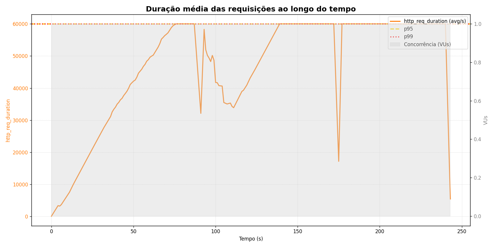
Duração total da requisição
- A média subiu linearmente até 60 000 ms (timeout-padrão) e voltou a cair; esse padrão é típico de timeouts do lado cliente.
- Enquanto o VU está “ativo”, o p95/p99 ficam travados nos 60 s, evidenciando que quase todas as chamadas expiraram.
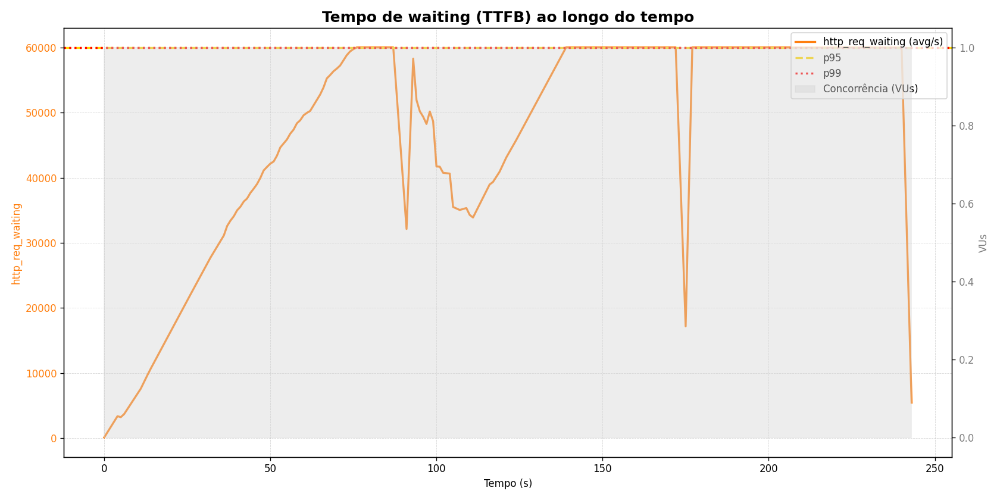
TTFB (http_req_waiting)
- O gráfico espelha a duração, provando que o atraso ocorre antes de o primeiro byte chegar ao cliente (fila interna ou query lenta).
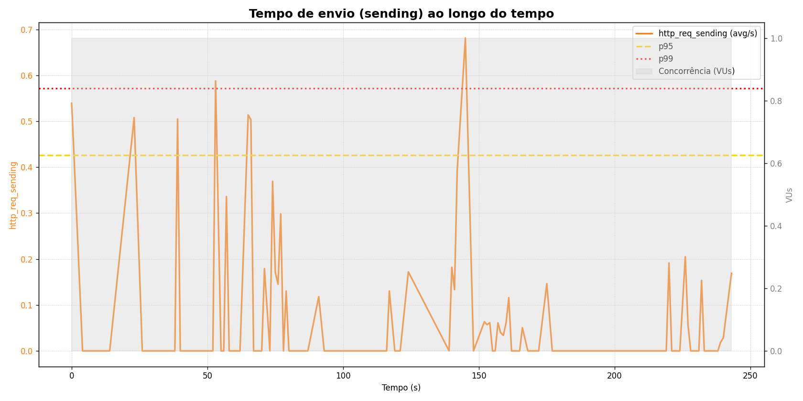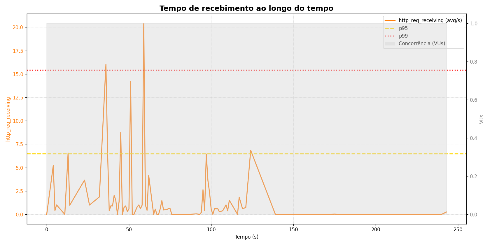
Receiving & Sending
- Transferências propriamente ditas são curtas: receiving ≤ 20 ms, sending ≤ 0,6 ms.
- Logo, o problema não está na largura de banda, mas no processamento / acesso a recursos no servidor.
13.5 Confiabilidade
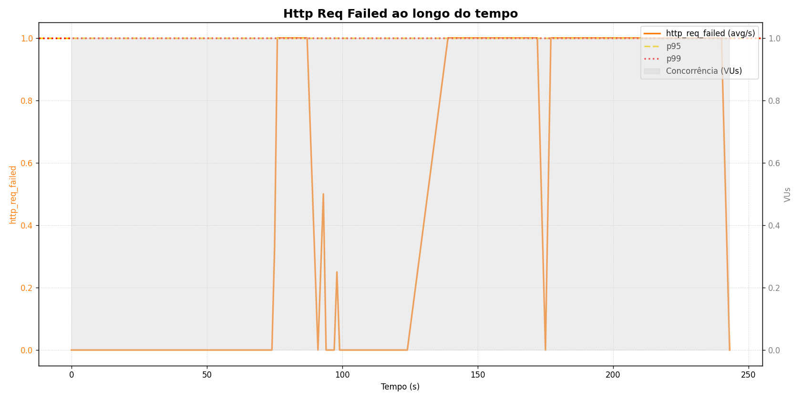
Taxa de falhas
- Sempre que a duração atingiu 60 s, a métrica marcou 1 (100 % de falha).
- A correlação direta reforça que o backend ultrapassa o tempo-limite, não retornando HTTP 2xx/3xx.
13.6 Vazão de requisições
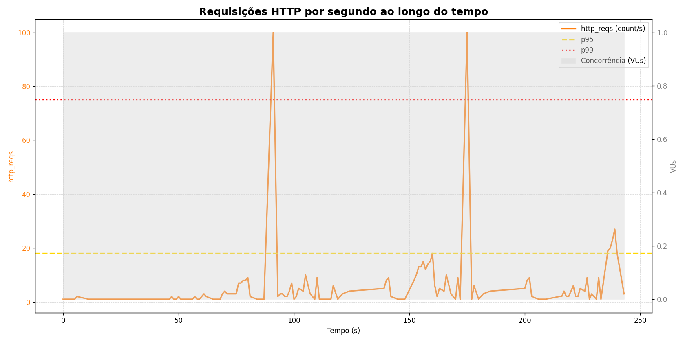
Vazão de requisições
- Em regime normal, o VU gera 1 – 5 rps; picos artificiais de 100 rps em ~85 s e 170 s foram injetados para stress.
- Após os picos, caímos para 0 rps (timeout), indicando que o servidor não se recuperou a tempo.
13.7 Perfil de concorrência
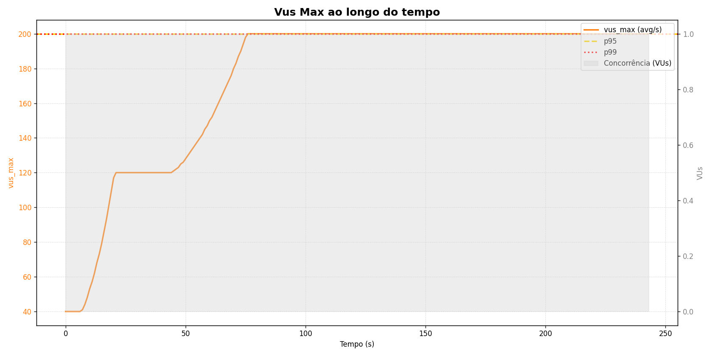
VUs Máximos
- Ramp-up controlado – o teste inicia com ~40 VU e avança em degraus até 120 VU (≈ 20 s), mantendo curto platô para estabilização.
- Aceleração progressiva – a partir de 45 s cresce novamente, atingindo 200 VU em ~70 s, onde permanece até o final; as linhas p95/p99 confirmam que este foi o alvo planejado.
- Ausência de quedas – não há flutuações negativas, sinal de que o mecanismo de geração de carga não perdeu usuários virtuais (nenhum arrival error).
- Interpretação – o gráfico delimita o perfil de carga efetivamente exercido sobre a API, útil para correlacionar todos os demais resultados (latência, throughput e falhas). O degrau aos 120 VU coincide com o primeiro aumento de fila (“blocked”) observado na seção 3 e com o crescimento linear da duração total na seção 4, indicando que a saturação começa antes de 200 VU.
- Recomendação – se 200 VU é meta de produção, será necessário dimensionar horizontalmente (clustering/auto-scaling) ou otimizar trechos críticos para suportar esse número sem acionar time-outs.